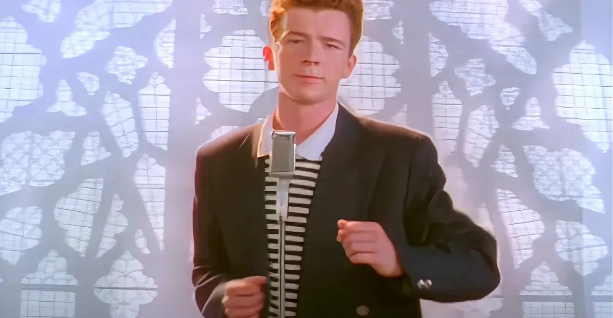

1987
Never Gonna Give You Up
Rick Astley released his first single, written and produced by the Stock Aitken Waterman team. The song became a worldwide hit.
An internet history lesson

How a catchy 1987 pop song became the web's most enduring bait-and-switch.
1987
Rick Astley released his first single, written and produced by the Stock Aitken Waterman team. The song became a worldwide hit.
2007
Before Rickrolling took over, 4chan users popularized a similar trick called duckrolling, sending visitors to a page with a wheeled duck.
2007
A link to a supposed trailer for Grand Theft Auto IV redirected viewers to Astley's music video. The rickroll was born.
2008
News sites, brands, and even major events joined in. The prank reached millions of unsuspecting viewers.
Today
Rickrolling remains a friendly reminder that the internet loves a familiar song, a well-hidden link, and a harmless surprise.
Rickrolling works because the setup is simple, the payoff is harmless, and the song is genuinely memorable. What began as a niche forum prank became one of the web's most recognizable cultural in-jokes.